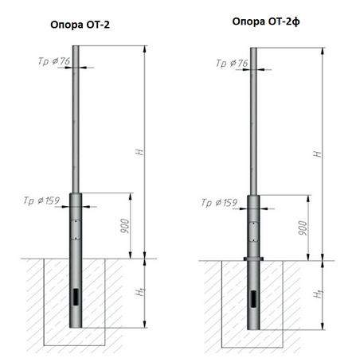
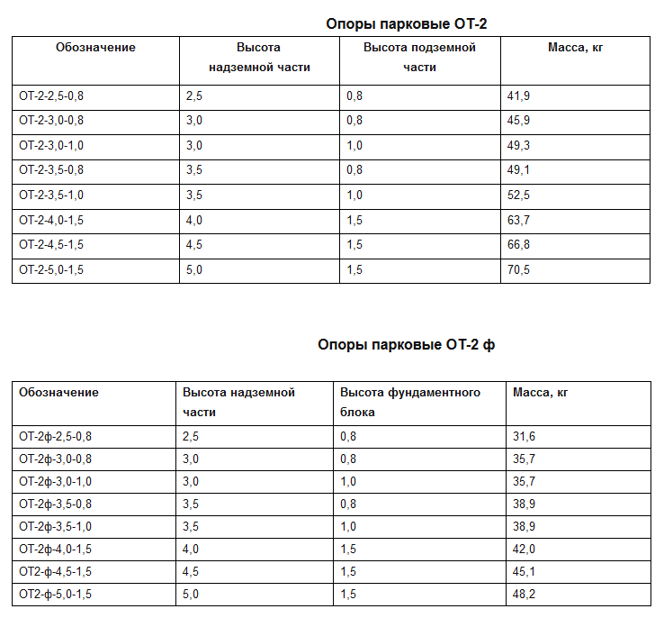

Основным назначением опор ОТ-2, является освещение дворов жилых массивов, парков, скверов, отдельно стоящих торговых центров, парковок, открытых площадей ресторанов быстрого питания, уличных кафе, детских садов, школьных парадных, коттеджных поселков, автозаправочных станций (АЗС), а также других мест где, проектом предусмотрена установка декоративного освещения. Торшерные опоры изготавливаются рабочей высотой от 2,5 до 5,0 метров и используются исключительно для подземной подводки питания. Сверху на опору устанавливается либо кронштейн декоративного типа, либо венчающий светильник.
Габаритные размеры:
Рабочая высота опоры (размер надземной части) – от 2,5 до 5,0 метров;
Высота подземной части (либо фундаментного блока) – от 0,8 до 1,5 метров;
Способ монтажа:
Установка опоры производится в грунт на глубину от 0,8 до 1,5 метров, с последующем бетонированием.
Для фланцевого исполнения: сначала монтируется фундаментный блок в грунт на глубину от 0,8 до 1,5 метров и бетонируется. Далее при помощи фланцевого соединения на болтах крепится опора.
Способ подвода питающего кабеля:
Для питания опоры ОТ-2 предусмотрена исключительно подземная подводка кабеля.
В подземной части опоры (либо фундаментного блока) расположен лючок для ввода кабеля в опору.
В надземной части опоры расположен лючок обслуживания
Материал изготовления:
Опора изготавливается из электросварной трубы ГОСТ 10704-91.
Антикоррозийное покрытие:
Лакокрасочное покрытие, порошковая окраска, либо антикоррозийная защита методом горячего оцинкования ГОСТ 9.307-89.
Условное обозначение:
ОТ - опора трубчатая;
2 - номер типоразмера;
ф - фланцевое соединение стойки (надземной части) и закладного элемента;
2,5 – 5,0 - рабочая высота опоры (размер надземной части);
0,8 – 1,5 - высота подземной части (либо рекомендуемый размер фундаментного блока);
г – предусматривает способ крепления кронштейна при помощи гаек;
п – предусматривает установку переходника D=57 мм для крепления светильника;
гор. цинк – обозначение антикоррозийной защиты методом горячего оцинкования ГОСТ 9.307-89;
грунт-эмаль серый – обозначение лакокрасочного покрытия с указанием цвета;
порошк. окр. RAL 7023 – обозначение порошкового покрытия с указанием RAL;
